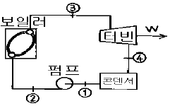
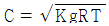
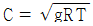
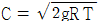
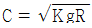

에너지관리산업기사 (2003-05-25 기출문제)
1과목: 열역학 및 연소관리
1. 올잣트(Orsat) 분석기 사용시 흡수순서로 옳은 것은?
- CO2 → O2 → CO
- CO2 → CO → O2
- O2 → CO → CO2
- CO → CO2 → O2
(정답률: 74%)

2. 탄화도를 기준으로 석탄을 분류할 때 탄화도 증가에 따라 석탄의 성질은 일반적으로 어떻게 변화하는가?
- 휘발성이 증가한다.
- 고정탄소량이 감소한다.
- 발열량이 증가한다.
- 착화 온도가 낮아진다.
(정답률: 54%)
3. 압력 100kg/cm2의 포화증기 1kg을 같은 압력 450℃의 과열 증기로 변화시키는데 필요한 열량(kcal)은? (단, 압력 100kg/cm2의 포화증기의 엔탈피는 652kcal/kg, 압력 100kg/cm2의 450℃의 과열증기의 엔탈피는 779kcal/kg이다.)
- 127
- 756
- 1⑤5
- 1431
(정답률: 42%)
4. 연료의 연소에 대한 3대 반응에 속하지 않는 것은?
- 산화반응
- 환원반응
- 이온화반응
- 열분해반응
(정답률: 60%)
5. 매연발생 원인에 대한 설명으로 가장 부적절한 것은?
- 연료에 대한 공기량이 불충분한 경우 연료속에 탄화수소가 불완전연소하여 매연을 발생한다.
- 연소실 체적 및 구조가 불완전하기 때문에 가연가스와 공기와 혼합이 안되었을 때 매연을 발생한다.
- 사용연료가 연소장치에 대해서 부적당하여 연소가 완전히 행하여지지 않을 때 매연을 발생한다.
- 일반적으로 과잉공기가 과대할 때는 특히 매연의 발생이 많다.
(정답률: 87%)
6. 중유 1kg의 이론공기량을 12m3, 공기비 1.3으로 하고, 시간당 800kg의 중유를 연소시킬 경우, 이것에 이용하는 송풍기의 분당 송풍량(m3/분)으로 맞는 것은?
- 480
- 320
- 258
- 208
(정답률: 27%)
7. 다음 중 연소용 송풍기와 배기가스 흡입 통풍기를 함께 사용하는 통풍 방식은?
- 자연통풍
- 평형통풍
- 압입통풍
- 흡출통풍
(정답률: 79%)
8. 중유를 버너로 연소시킬 때 다음 중 연소상태에 가장 적게 영향을 미치는 성질은?
- 황분
- 점도
- 인화점
- 유동점
(정답률: 62%)
9. 압력손실 200mmAq인 사이클론을 써서 시간당 1000m3의 가스를 제진할 때에 소요되는 동력(kW)를 구하면? (단, P = 0.272×10-5×ΔP×Q)
- 0.544
- 0.704
- 0.922
- 1.102
(정답률: 36%)
10. 기체연료의 성분을 가연성분과 불연성분으로 구분할 때 다음 중 불연성분이 아닌 것은?
- 탄산가스
- 일산화탄소
- 질소
- 수분
(정답률: 67%)
11. 프로판-공기혼합기의 최고 연소속도(층류화염 전파속도)는 몇 ㎝/s 정도인가?
- 20
- 40
- 90
- 280
(정답률: 48%)
12. 다음 연소반응식 중에서 가장 발열량이 큰 것은? (단, 단위연료의 kg-mol당 기준)
- C + 1/2 O2 = CO (발생노가스 반응)
- CO + 1/2 O2 = CO2 (일산화탄소의 완전연소)
- C + O2 = CO2 (탄소의 완전연소)
- S + O2 = SO2 (황의 완전연소)
(정답률: 74%)
13. 다음 연료중 연료비가 가장 큰 것은?
- 토탄
- 갈탄
- 역청탄(유연탄)
- 무연탄
(정답률: 76%)
14. 액화석유가스(LPG)가 증발할 때에 흡수한 열은?
- 현열
- 잠열
- 융해열
- 화학반응열
(정답률: 71%)
15. 다음 연료중 고위발열량이 가장 큰 것은?
- 중유
- 프로판
- 석탄
- 코크스
(정답률: 85%)
16. 공기비란 다음 중 어느 것인가?
- 실제공기량과 이론공기량의 차이
- 실제공기량에서 이론공기량을 뺀 것을 이론공기량으로 나눈 것
- 이론공기량에 대한 실제공기량의 비
- 실제공기량에 대한 이론공기량의 비
(정답률: 67%)
17. 다음 중 액체 연료의 점도와 가장 관련이 없는 것은?
- 캐논-펜스케
- 몰리에(Mollier)
- 스토크스(Stokes)
- 포아스(Poise)
(정답률: 89%)
18. 아래 조건의 성분을 가진 중유가 있다. 연소효율이 95%라 한다면 중유 1kg당의 저위발열량은 얼마인가? (단, C : 86%, H : 12%, O : 0.4%, S : 1.2%, ash :0.4%)
- 9987kcal/kg
- 9916kcal/kg
- 9762kcal/kg
- 9340kcal/kg
(정답률: 45%)
19. 액체 연료를 옥외탱크에 저장하는데 대한 설명으로 틀린 것은?
- 주위에 공지를 마련해야 한다.
- 탱크판 두께는 3.2mm 이상이어야 한다.
- 사용압력의 1.5배 압력에서 10분이상 견디어야 한다.
- 내부의 증발가스가 밖으로 나오는 것을 막아야 한다.
(정답률: 51%)
20. 중류를 A, B, C 중유로 나눌 때 이것을 분류하는 기준은 다음 중 어느 것인가?
- 점도에 따라 분류
- 비중에 따라 분류
- 발열량에 따라 분류
- 황의 함유율에 따라 분류
(정답률: 84%)
2과목: 계측 및 에너지진단
21. 다음 중 이상기체의 등온과정에 대하여 성립하는 것은? (단, W는 일, Q는 열, U는 내부에너지를 의미한다.)
- W = O
- Q = O
- Q ≠ W
- △U = O
(정답률: 85%)
22. 계내에 어떤 이상기체(기체상수 : 0.35[kg/kgㆍK], 정압비열 : 0.75[KJ/kgㆍK])가 초기상태(75kpa, 50℃)에서 5kg이 들어 있다. 이 기체를 일정 압력하에서 부피가 2배가 될때까지 팽창시킨 다음, 일정 부피에서 압력이 2배가 될때까지 가열하였다면 전 과정에서 이 기체에 전달된 전열량(KJ)은 약 얼마인가?
- 565
- 1210
- 1290
- 2500
(정답률: 39%)
23. 다음 중 가역사이클이 아닌 것은?
- 카르노사이클
- 스터링사이클
- 에릭슨사이클
- 브레이튼사이클
(정답률: 49%)
24. 건도가 x인 증기의 엔탈피(hx)에 대한 표현식으로 옳은 것은? (단, 포화수 및 건포화수증기에 대한 엔탈피와 비체적을 각각 h', h"와 v', v"라 한다.)
- hx = h'+ x(h' - h")
- hx = h'+ x(h" - h')
- hx = h"+ x(h' - h")
- hx = h"+ x(h" - h')
(정답률: 67%)
25. 다음 중 열역학 제2법칙과 관계없는 것은?
- 열은 그 자체만으로 저온체에서 고온체로 흐르지 않는다.
- 제2종의 영구기관은 만들 수 없다.
- 자발적인 변화는 비가역적이다.
- 모든 일반적인 화학적, 물리적 변화에서 에너지는 창조되거나 소멸되지 않는다.
(정답률: 69%)
26. 압력 4.4[kg/cm2], 체적 1.14m3인 공기가 단열 팽창하여 0.462[kg/cm2]로 되었다. 이 때 체적이 5배라면 외부에 대한 절대 일(absolute work ; [kgㆍm])은 얼마인가? (단, 공기의 비열비(specific heat ratio)는 1.4이다.)
- 191,235
- 65,029
- 59,565
- 51,114
(정답률: 47%)
27. 15℃의 물 1㎏을 100℃의 포화수로 변화시킬 때 엔트로피 변화량은 몇 [㎉/㎏]인가?
- 0.259
- 0.763
- 1.324
- 1.627
(정답률: 25%)
28. 기체에 대한 설명중 옳지 않은 것은?
- 분자량이 클수록 비중이 크다.
- 분자량이 클수록 비열이 크다.
- 분자량이 클수록 일정질량의 기체가 등온, 등압에서 차지하는 체적이 작다.
- 분자량이 클수록 기체상수가 작다.
(정답률: 45%)
29. 랭킨 싸이클에 있어서 보일러 압력과 온도가 일정할 때 복수기의 압력이 높을수록 어떤 변화가 일어나는가?
- 터빈출력이 증가한다.
- 열효율이 감소한다.
- 펌프 소요일이 증가한다.
- 터빈 출구의 증기건도가 낮아진다.
(정답률: 60%)
30. 오토사이클의 이론 열효율(η)을 옳게 나타낸 식은? (단, 압축비와 비열비를 각각 ε, K라 한다.)
- η = 1 - 1/ε
- η = 1 - (1/ε)K
- η = 1 - (1/ε)K-1
- η = 1 - (1/ε)K+1
(정답률: 74%)
31. 포화액과 건포화증기의 엔탈피 차이는?
- 현열
- 내부에너지
- 엔탈피
- 잠열
(정답률: 45%)
32. 1[Newton]의 힘은?
- 1g ×1m/s2
- 1kg × 1m/s2
- 1lb × 1m/s2
- 1kg × 1cm/s2
(정답률: 82%)
33. 카르노의 정리에 대한 설명으로 옳은 것은?
- 가역사이클의 열효율은 어떠한 사이클의 열효율보다 낮다.
- 동일한 두 열원에서 작동하는 비가역 사이클과 가역 사이클의 열효율은 동일하다.
- 동일한 두 열원에서 작동하는 가역사이클의 열효율은 동일하다.
- 고열원이 동일하면 저열원이 다르더라도 가역 사이클의 열효율이 비가역 사이클보다 항상 크다.
(정답률: 45%)
34. 재생 가스터빈 사이클에 대한 설명중 틀린 것은?
- 가스터빈 사이클에 재생기를 사용하여 압축기 출구온도를 상승시킨 사이클이다.
- 효율은 사이클내 최대 온도에 대한 최저 온도의 비와 압력비의 함수이다.
- 효율과 일량은 압력비가 최대일 때 최대치가 나타난다.
- 사이클 효율은 압력비가 증가함에 따라 감소한다.
(정답률: 48%)
35. 온도 15℃에서 5[㎏/cm2], 20[ℓ]의 이상기체를 1[㎏/cm2] 까지 팽창시키고자 할 때 외부로 한 일은 몇 ㎏ㆍm 인가? (단, 온도는 일정함)
- 1204
- 1314
- 1527
- 1609
(정답률: 11%)
36. 열에 대한 일상당량으로 옳은 것은?
- 1/427 [kcal/㎏ㆍm]
- 427[㎏.m/kcal]
- 632.3[kcal/㎏ㆍm]
- 632.3[㎏ㆍm/kcal]
(정답률: 82%)
37. 1[kWh]는 몇 [kcal]에 해당하는가?
- 560
- 650
- 860
- 950
(정답률: 79%)
38. 공기 1ℓ 의 중량은 표준상태에서 1.293g이다. 압력 710 mmHg에서 공기 1ℓ 의 중량이 1g이었다면 이 때의 온도는 몇 K인가? (단, 기체상수 R = 62.4[ℓㆍmmHg/gㆍmolㆍK]이며, 공기는 이상 기체이다.)
- 60
- 273
- 329.5
- 430.2
(정답률: 35%)
39. 그림과 같은 증기원동소에서 각 점의 엔탈피가 주어졌을 때 이 증기원동소의 열효율은 얼마인가? (단, 연결관(pipe)들은 단열되었으며 손실이 전혀 없고, h1=191.8[kJ/kg], h2=193.8[kJ/kg], h3=2799.5[kJ/kg], h4=2007.5[kJ/kg])

- 9.6%
- 12.5%
- 20.5%
- 30.3%
(정답률: 31%)
40. 완전가스(perfect gas)내에서 음속 C[m/sec]는 다음 중 어떤 식으로 표현되는가? (단, K는 비열비, g는 중력가속도, R은 가스상수, T는 절대온도 이다.)




(정답률: 44%)
3과목: 열설비구조 및 시공
41. 비접촉식 온도계가 아닌 것은?
- 압력 온도계
- 광전관식 온도계
- 방사 온도계
- 색 온도계
(정답률: 76%)
42. 다음중 보일러(boiler)의 통풍계로 사용되고 있는 액주식 압력계는?
- U자관식
- 경사관식
- 침종식
- 아네로이드식
(정답률: 54%)
43. 보일러의 연소제어시 제어량이 증기압력일 때 조작량은 다음 중 어느 것이 가장 적합한가?
- 급수량 및 공기량
- 공기량 및 연소가스량
- 연료량 및 공기량
- 연료량 및 연소가스량
(정답률: 55%)
44. 어느 보일러 냉각기의 진공도가 730mmHg일 때 절대압으로 표시하면 몇 kg/cm2a인가?
- 0.12
- 0.18
- 0.04
- 0.02
(정답률: 63%)
45. 열전대 온도계는 어떤 현상을 이용한 온도계인가?
- 칫수의 증대
- 전기저항의 변화
- 기전력의 발생
- 압력의 발생
(정답률: 82%)
46. 직경이 100mm인 수평 원형관 속을 밀도가 80kg/m3이고 점성계수가 0.02kgfㆍsec/m2인 유체가 20m/sec의 속도로 흐를 때 레이놀즈수는 얼마인가?
- 8000
- 7000
- 6000
- 6500
(정답률: 25%)
47. 가스크로마토 그래프로 가스를 분석할 때 사용되는 캐리어 가스가 아닌 것은?
- H2
- N2
- Ar
- SO2
(정답률: 67%)
48. 액주에 의한 압력 측정에서 정밀한 측정을 위해서 필요하지 않는 보정은?
- 모세관 현상의 보정
- 높이의 보정
- 중력의 보정
- 온도의 보정
(정답률: 58%)
49. 미세압 측정용에 가장 적절한 압력계는?
- 브르돈관압력계
- 분동식압력계
- 경사관액주형압력계
- 전기식압력계
(정답률: 64%)
50. 고압유체의 유량측정이나 고속의 유체측정에 가장 적합한 교축기구는?
- 오리피스
- 피토관
- 플로우노즐
- 벤튜리
(정답률: 54%)
51. 니켈, 망간, 코발트 등의 금속 산화물의 분말을 혼합, 소결시켜 만든 반도체로서 전기저항이 온도에 따라 크게 변화하므로 응답이 빠른 감열소자로 이용할 수 있는 온도계는?
- 광온도계
- 더미스트
- PR 열전온도계
- 더모컬러
(정답률: 56%)
52. 수도미터에 주로 사용되는 유량계로 옳은 것은?
- 유속식
- 용적식
- 임펠러식
- 전자식
(정답률: 56%)
53. 습기가 흡입된 가스의 전(全)압력 P를 나타내는 관계식으로 옳은 것은? (단, ø는 포화도, Pg는 가스의 분압, Pw는 수증기의 분압을 나타낸다.)
- P = (Pg/Pw)×100
- P = Pg + Pw
- P = Pg - Pw
- P = Pg + øPw
(정답률: 54%)
54. 가스크로마토 그래피에 대한 특징으로 거리가 먼 것은?
- 각종 가스 성분 분석이 가능하다.
- 분리 능력이 우수하다.
- 선택성이 우수하다.
- 1회 측정 시간이 수 초에서 수십 분 정도이다.
(정답률: 76%)
55. 온도계의 교정시에 사용하는 표준 온도는 몇 도인가?
- 20℃
- 0℃
- 100℃
- 5℃
(정답률: 67%)
56. 오르자트분석계에서 탄산가스의 흡수 용액은?
- 피로가롤용액 30%
- 수산화칼륨 30% 수용액
- 피로가롤용액 50%
- 수산화칼륨 50% 수용액
(정답률: 80%)
57. 유체에 의한 가열선의 흡수열량 측정에 의해 유량을 측정하는 것은?
- 토마스미터
- 칼만식유량계
- 오벌유량계
- 플로우노즐
(정답률: 38%)
58. 가스크로마토그래피 장치 사용시 쓰이지 않는 것은?
- 컬럼검출기
- 유량측정기
- 직류증폭장치
- 주사기
(정답률: 47%)
59. 노내압을 제어하는데 필요하지 않는 조작은?
- 공기량 조작
- 급수량 조작
- 연소가스 배출량 조작
- 댐퍼의 조작
(정답률: 72%)
60. 다음 중 케스케이드(Cascade)제어를 바르게 설명한 것은?
- 목표치가 다른 조절기에 출력에 따라 변화되는 제어
- 목표치가 다른 프로세스 변화량과 일정한 비율로 변화되는 제어
- 목표치의 변화방법이 미리 정해져 있는 제어
- 목표치가 임의의 시간에 따라 변화되는 제어
(정답률: 52%)
4과목: 열설비취급 및 안전관리
61. 가장 치밀한 내화물의 조직은?
- 결합조직
- 응고조직
- 복합조직
- 다공조직
(정답률: 56%)
62. 고온용 요로의 벽구조로 가장 합리적인 것은?
- 내화벽돌 만으로 쌓은 것
- 고온부는 내화벽돌로 하고, 저온부는 보통벽돌로 한 것
- 고온부는 내화벽돌로 쌓고, 저온부분은 보통벽돌로 하되 그사이에 단열벽돌을 쌓은 것
- 저온부는 보통벽돌과 고온부는 단열벽돌로 한 것
(정답률: 82%)
63. 증기난방의 경우 표준방열기를 기준으로 실내의 난방부하에 필요한 방열기의 필요 섹션수(Ns)를 구하는 식으로 가장 적합한 것은? (단, HL는 실내의 난방부하, a는 방열기 섹션 1개의 방열 면적 )
- HL/400a
- 400a/HL
- 650a/HL
- HL/650a
(정답률: 48%)
64. 고체연료는 액체연료와 비교하여 보통 산소의 함유량이 크고 수소가 적다. 액체연료에서 탄소 함유량(%)은?
- 90 ~ 50
- 87 ~ 85
- 75 ~ 0
- 5 ~ 10
(정답률: 51%)
65. 내화점토질 벽돌의 주된 화학성분은?
- MgO, Al2O3
- FeO, Cr2O3
- MgO, SiO2
- Al2O3, SiO2
(정답률: 34%)
66. 내벽의 내화벽돌 두께 22mm, 열전도율 1.1kcal/mh℃, 중간벽의 단열벽돌 두께 9cm, 열전도율 0.12kcal/mh℃, 외벽은 붉은 벽돌 두께 20cm, 열전도율 0.8kcal/mh℃로 되어 있는 노벽이 있다. 내벽 표면의 온도가 1000℃일 때 외벽 표면온도는 몇 도이겠는가? (단, 외벽 주위온도는 20℃, 외벽 표면의 열전달율은 7kcal/m2h℃로 한다.)
- 104℃
- 267℃
- 141℃
- 124℃
(정답률: 33%)
67. 일반적으로 부피비중이 가장 크다고 인정되는 내화물은?
- 샤모트질 소성내화물
- 마그네시아질 불소성내화물
- 지르콘질 용융내화물
- 알루미나질 소성내화물
(정답률: 37%)
68. 보일러급수에 함유되어 있는 공기, 산소 및 탄산가스 등은 보일러관, 각종 가열기 및 절탄기 등을 부식시킨다. 이와 같은 용해가스를 제거하는 장치는?
- 절탄기
- 탈기기
- 이온교환장치
- 관수연속브로우다운장치
(정답률: 66%)
69. 다음의 단열재중 주로 저온용으로 사용할 수 있는 것은?
- 카오 울(Kao wool)
- 우레탄 폼(Urethan foam)
- 펄라이트(Pearlite)
- 캐스터블(Castable)
(정답률: 63%)
70. 급수의 pH와 알칼리도 조성에 사용되는 약품으로 적합하지 않은 것은?
- NaOH
- 인산염
- 소다회
- 탄닌
(정답률: 66%)
71. 불연속가마, 연속가마, 반연속가마의 구분 방식은 어느것인가?
- 사용 목적
- 온도상승 속도
- 전열 방식
- 조업 방식
(정답률: 47%)
72. 밸브봉을 돌려서 열 때 밸브 좌면과 직선적으로 미끄럼 운동을 하는 밸브로서 슬라이딩밸브의 일종이며 고압에 견디고 밸브관이 유체 통로를 전개하므로 흐름의 저항이 거의 없는 밸브는?
- 앵글밸브
- 슬루우스밸브
- 글루우브밸브
- 회전밸브
(정답률: 62%)
73. 실리카의 전이(轉移)특성을 잘 나타낸 것은?
- 규석은 가장 안정된 광물로서 온도변화에 따라 영향을 받지 않는다.
- 가열온도가 높아질수록 비중이 커진다.
- 내화물에서 중요한 것은 실리카의 고온형 변태이다.
- 실리카의 전이는 오랜 시간을 요해서만 이루어진다.
(정답률: 60%)
74. 다음 중 크롬마그네시아 벽돌의 가장 우수한 특성은?
- 내화도와 하중 연화점이 낮다.
- 내스폴링성이 크다.
- 비중이 적다.
- 팽창률이 크다.
(정답률: 65%)
75. 다음 중 도염식 각요의 구조부분이 아닌 것은?
- 화교(Bag wall)
- 흡입공(Suction pore)
- 연도
- 종이 칸막이
(정답률: 79%)
76. 내경 1000㎜, 두께 10㎜의 강판으로 원통을 만들면 몇 ㎏/mm2의 압력까지 사용할 수 있는가? (단, 허용 응력은 7㎏/mm2, 이음 효율은 65%로 한다.)
- 7.1
- 8.1
- 9.1
- 10.1
(정답률: 50%)
77. Fourier 법칙의 설명으로 틀린 것은?
- 열전달 속도는 일반적인 속도와 같이 기력/저항으로 표시한다.
- 열전달 속도는 면적과 온도구배의 곱에 비례한다.
- 열전달에 있어서 기력(driving force)은 온도차이다.
- 열전달 저항은 전달 면적과 두께의 비이다.
(정답률: 49%)
78. 금속을 열처리 용접할 때 적당한 가스분위기인 보호 가스 내에서 작업이 이루어져야 하는데 다음 중 보호가스로 적합한 것은?
- H2
- O2
- CO2
- H2O
(정답률: 32%)
79. 다음 중 배소로의 역할을 가장 알맞게 설명한 것은?
- 광석이 융해되지 않을 정도로 가열하여서 화학적, 물리적 변화를 일으킨다.
- 광석을 용융시켜 화학적 변화를 일으킨다.
- 괴상의 광석을 미분화시킨다.
- 분말광석을 괴상으로 소결시킨다.
(정답률: 47%)
80. 다음은 보일러 부속장치에 대한 설명이다. 이중 옳지 않는 것은?
- 공기예열기란 연소배가스의 폐열로 공급 공기를 가열시키는 장치이다.
- 절탄기란 연료공급을 적당히 분배하여 완전 연소를 위한 장치이다.
- 과열기란 포화증기를 가열시키는 장치이다.
- 재열기란 원동기(증기터빈)에서 팽창한 증기를 재가열시키는 장치이다.
(정답률: 78%)